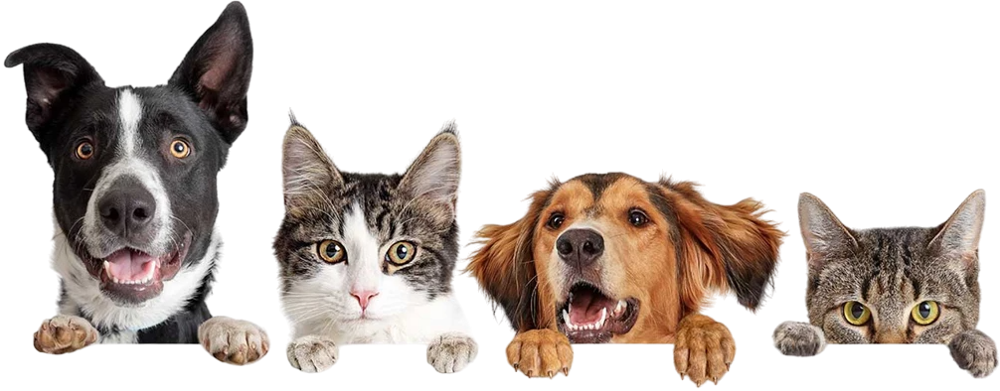

Bem-vindo à
Cínica Veterinária DogCats, o lugar onde a saúde e o bem-estar dos seus felinos e
caninos são nossa prioridade. Localizada no coração da
cidade, nossa clínica é especialmente projetada para
oferecer um ambiente acolhedor e seguro para gatos e
cachorros de todas as idades e tamanhos.